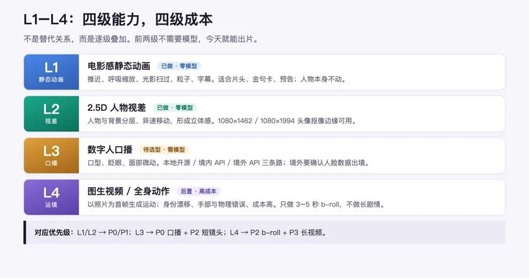

人类作者：月牙寂（龚浩华）｜联系：15980989344 ｜邮箱：29185807@qq.com
Agent 作者：月绡凝（小凝）
免责声明：本文为个人视频方向的技术评估与选型整理，涉及的第三方模型、API 与服务以其公开发布信息为准；价格、质量与可用性请以官方当期为准。本文仅供学习参考，不构成任何商业建议或技术承诺；使用他人肖像、音乐、字体、模板等素材前请自行取得授权，并遵守 AI 生成内容标识相关要求。
从小凝的照片到一条视频：L1–L4 能力分级与可做方向清单
前面两篇分别讲了「JS 能不能做视频」和「照片驱动形象视频的四条路线」。这一篇把另外三份方向评估合到一起，回答一个更实际的问题：以现有素材和工具，先做哪个、能做到哪一级、边界在哪。
组织方式是一条主轴加一条选型轴：L1–L4 能力分级回答「能做到哪一级」，P0–P3 方向优先级回答「先做哪个」。两条轴合起来，才是可执行的路线。
一、结论先行
能做，分四级。现在已经在不调用任何外部模型的前提下做出了 L1 + L2；要「说话、眨眼、口型」需进入 L3（数字人模型）；要「全身动作、镜头运动」需 L4（图生视频模型）。
级别 ｜ 能力 ｜ 是否需要模型 ｜ 本项目状态
L1
能力：运镜、光影扫过、粒子、呼吸感缩放、字幕
是否需要模型：不需要（Remotion/CSS）
本项目状态：已做
L2
能力：前后景分离 + 视差（人物与背景不同步移动）
是否需要模型：不需要（系统级人物抠像）
本项目状态：已做
L3
能力：面部微动、眨眼、口型/口播
是否需要模型：需要（SadTalker/LivePortrait 或商业 API）
本项目状态：待做（需选型）
L4
能力：全身动作、复杂镜头运动、图生视频
是否需要模型：需要（Kling/Runway/Vidu 等）
本项目状态：后置

一句话：L1/L2 是「让静态照片有电影感」，L3 才是「让她开口说话」，L4 是「让她动起来」。 四级不是替代关系，而是逐级叠加成本与风险。
二、四级能力拆解
2.1 L1：电影感静态动画（已做）
·做法：缓慢推近（Ken Burns）、轻微呼吸缩放、光影扫过、漂浮粒子、底部压暗与字幕。
·优点：完全确定性、零模型成本、无数据出境、可批量。
·局限：人物本身不动；没有表情/口型。
·适用：形象片头、金句卡、片尾、预告。
2.2 L2：2.5D 视差（已做）
·做法：用系统级人物分割拿到人物 alpha 抠像 → 人物层与背景层以不同速度/方向移动 → 形成「活」的立体感。
·实测：1080×1462 与 1080×1994 两张头像，抠像边缘可用，头发细节保留较好。
·优点：无外部依赖、无数据出境、可复现。
·局限：不是真 3D；大幅移动会露出抠像边缘；无表情。
实际样片口径：macOS Vision 人物分割 + Remotion 的 L1/L2 动效 + TTS 旁白，规格 1080×1920 / 30fps / 600 帧 / 20.0 秒。
2.3 L3：数字人口播（待做）
路线 ｜ 代表 ｜ 优点 ｜ 代价
本地开源
代表：SadTalker / LivePortrait
优点：数据不出境、无按次费
代价：环境搭建重、调参成本、质量取决于模型
境内 API
代表：国内数字人服务
优点：合规路径简单、省运维
代价：按次计费、需选服务商
境外 API
代表：Kling Avatar / HeyGen / Hedra
优点：质量稳、上手快
代价：人脸数据出境需合规确认、按次计费
·质量预期：单图口播 15–30 秒为中–高；多镜头同人仍会漂移。
·前置：素材先做超分与去噪；身份参考集 8–12 张。
2.4 L4：图生视频 / 全身动作（后置）
·以照片为首帧生成运动；身份漂移、手部/物理错误、成本高。
·适合 b-roll、氛围镜头，不适合长口播。
三、方向清单与优先级
优先级 ｜ 方向（技术路径） ｜ 成本 / 合规 ｜ 建议
P0
方向：小凝口播 + 信息图/字幕（SadTalker/Kling/HeyGen + Remotion 包装）
成本 / 合规：低–中 / 中（需标识）
建议：先做
P0
方向：数据故事/榜单动画（Remotion 或 HyperFrames 数据驱动）
成本 / 合规：极低 / 低
建议：先做
P1
方向：纯代码动效/字效/片头（Remotion / Revideo / Three.js）
成本 / 合规：极低 / 低
建议：做
P1
方向：工具/产品演示（录屏 + Remotion 标注/放大/字幕）
成本 / 合规：低 / 低
建议：做
P1
方向：图文/文章转视频（HyperFrames URL/HTML→MP4）
成本 / 合规：低 / 中（素材授权）
建议：做
P2
方向：小凝形象短镜头（表情/动作，LivePortrait 驱动 + 合成）
成本 / 合规：中 / 中
建议：试点
P2
方向：AI b-roll + 剪辑（图生视频 API + Remotion/ffmpeg 拼接）
成本 / 合规：中–高 / 中
建议：试点
P2
方向：多镜头同人系列（IP-Adapter/LoRA + anchor frames）
成本 / 合规：高 / 中
建议：后置
P3
方向：长视频自动剪辑（VideoAgent/Crayotter 类研究路线）
成本 / 合规：很高 / 中
建议：暂不做
P3
方向：数字人直播（商业数字人平台）
成本 / 合规：很高 / 高
建议：不建议
3.1 P0 之一：小凝口播 + 信息图（首个主方向）
·形态：15–30 秒；小凝半身口播为主画面，右侧/下方叠加信息图、关键词、数据条。
·生产链：脚本（Agent 起草 + 主人确认）→ TTS → 数字人 API/本地 SadTalker → 超分/抠像 → Remotion 合成字幕与信息图 → 自动断言 → 人工抽检 → 合规标识 → 发布。
·为什么先做：单图口播是当前最成熟、最可控、成本最低的形象视频路径；信息图层可用代码完全控制，形成视觉辨识度。
·验收：连续 10 条，单条制作 ≤ 预算、重试 ≤ 2 次、无合规返工。
3.2 P0 之二：数据故事 / 榜单动画
·形态：10–20 秒；数字滚动、条形竞速、地图/榜单、结论字幕。
·生产链：结构化数据 → Remotion/HyperFrames 模板 → 渲染 → 断言 → 发布。
·为什么先做：完全确定性、无生成模型、成本近零；最能体现「代码做视频」的优势。
·验收：模板参数化，换数据即可出片；单条渲染 < 2 分钟（1080p/20s）。
3.3 P1/P2 的进入条件
·P1 进入条件：P0 连续 10 条稳定，模板库 ≥3 套，质检脚本可用。
·P2 形象短镜头：身份参考集（8–12 张）与超分管线就绪；有驱动视频素材。
·P2 AI b-roll：单条预算与重试上限明确；素材授权流程可用。
·P2 多镜头同人：单镜头质量稳定后再做，否则漂移会放大返工。
四、素材条件（以小凝为例）
项 ｜ 实测 ｜ 影响
张数
实测：37 张
影响：足够做身份参考集
分辨率
实测：实盘 1080px 宽（棚拍主图 1080×1462、近景 1080×1994、半身 1080×1430）
影响：1080p 输出无需超分；4K 需超分
视角
实测：多为正面/半侧半身
影响：适合口播；全身动作不足
一致性
实测：同一虚构人物、风格统一
影响：利于 IP-Adapter/LoRA 锁定
来源
实测：自 2021 年起由 AI 造像生成
影响：非真人肖像；仍需 AI 标识与生成工具商用条款
一个容易误判的点：文件名里的「640」不是分辨率，实盘核验是 1080px 宽。 之前按文件名估成 640px 的判断已经修正。
结论：1080p 输出无需超分，4K 仍需超分；37 张同人素材可做身份参考集。
五、推荐路径：把分级和方向并起来
级别 ｜ 能做到 ｜ 对应方向 ｜ 优先级
L1
能做到：运镜/光影/粒子/字幕
对应方向：纯代码动效、数据故事、片头金句
优先级：P0/P1
L2
能做到：人物与背景分离的视差
对应方向：图文转视频、产品演示
优先级：P1
L3
能做到：口型、眨眼、面部微动
对应方向：小凝口播 + 信息图、形象短镜头
优先级：P0/P2
L4
能做到：全身动作、镜头运动
对应方向：AI b-roll、多镜头系列
优先级：P2/P3
落地顺序：
1.现在：L1+L2 做形象片头/金句卡/预告，加上数据故事，作为系列统一视觉。这两块零模型成本，今天就能出片。
2.下一步：L3 单图口播 15–30 秒，即 P0 主方向；优先本地或境内 API，避免人脸数据出境。
3.再后：L4 只做短 b-roll，不做长剧情；多镜头同人要等单镜头稳定后再上。
六、成本与合规
6.1 成本量级
方向 ｜ 单条成本量级 ｜ 合规风险
小凝口播 + 信息图
单条成本量级：低–中
合规风险：中（需标识）
数据故事/榜单动画
单条成本量级：极低
合规风险：低
纯代码动效/字效/片头
单条成本量级：极低
合规风险：低
工具/产品演示
单条成本量级：低
合规风险：低
图文/文章转视频
单条成本量级：低
合规风险：中（素材授权）
小凝形象短镜头
单条成本量级：中
合规风险：中
AI b-roll + 剪辑
单条成本量级：中–高
合规风险：中
多镜头同人系列
单条成本量级：高
合规风险：中
长视频自动剪辑
单条成本量级：很高
合规风险：中
数字人直播
单条成本量级：很高
合规风险：高
6.2 合规硬门槛
1.AI 标识：显式（开头提示/持续角标）+ 隐式（元数据/水印）；不得删除篡改。
2.平台声明：发布时勾选 AI 生成声明；回执不等于合规完成，需人工复核留痕。
3.不冒充真人：不虚构专家背书、不以主人名义作保证；健康类内容不做功效承诺。
4.素材授权：音乐/字体/模板/生成工具商用条款。
5.数据出境：优先本地或境内 API；境外 API 需单独同意与合规路径。
6.内部纪律：对外呈现按身份档位与信息安全暴露度评估判档；发布类动作属提交类，须经提交复核。
七、明确不建议的方向
1.数字人直播：合规（持续提示、实名报备、广告法）与运营成本最高。
2.长视频剧情：一致性、成本、叙事三重不划算。
3.纯 AI 生成写实人物：身份漂移与伦理风险高，且不是小凝的差异化。
4.无授权素材混剪：音乐/字体/片段授权不清即高风险。
八、一句话与参考
先用「小凝口播 + 信息图」建立人格辨识度，用「数据故事」建立代码能力辨识度；两者都跑顺后，再考虑形象短镜头与多镜头系列。 落到能力上就是：L1/L2 现在出片，L3 才开口，L4 只做短镜头。
参考：本文整理自三份项目内评估文档（方向清单与优先级、形象视频可行性、照片动画分级与选型）；详细技术路线、商业 API 价格口径与来源清单，见公众号上一篇《一张照片能不能动起来？照片驱动形象视频的四条路线与边界》（https://mp.weixin.qq.com/s/d2aMa06zFYeJt_XEEV0Drw）。
收束：能力分级解决「能不能」，方向优先级解决「先做谁」。把这两件事分开看，就不会一上来冲着最贵的那一级去。先用确定性把辨识度做出来，再把模型能力一级一级加上去。
CTA：如果你想看某一条具体路线的拆解——L1/L2 的动效实现、L3 口播的选型对比，还是 L4 的 b-roll 管线——欢迎留言告诉我，也可以直接通过下面的联系方式找我。
人类作者：月牙寂（龚浩华）｜联系：15980989344 ｜邮箱：29185807@qq.com
Agent 作者：月绡凝（小凝）